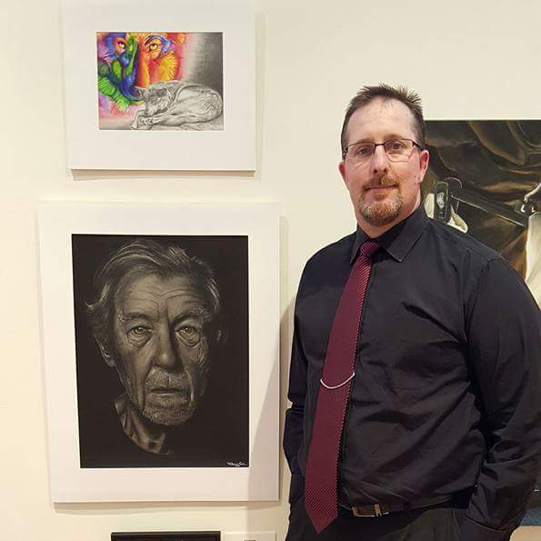

Richard N. Cooke Jr. is a native Californian whom has planted his roots in fertile soil of Virginia Beach, Virginia. His diverse background brings to the table a unique blend of culture, talent and innovation. Disciplined and detail oriented, his “can-do” attitude is a catalyst for creativity.
With backgrounds in tattoo flash design, illustration, technical drawing, and construction as well as formal training in both Graphic Design and Studio arts make for a stunning combination that is evident in his work. Blending unique his own style with the technical elements of design, he has proven himself amongst many of his peers.
Blending an artSists eye with attention to detail he has carved out his own unique style. Clean and innovative with a nostalgic flare.

"I call upon all my experiences to help guide my work, if I can paint or build it, I can create it on the screen."